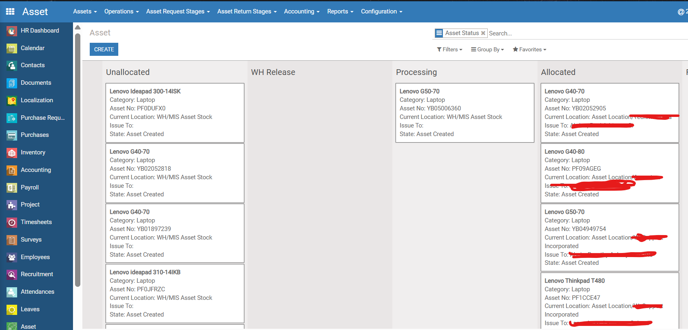
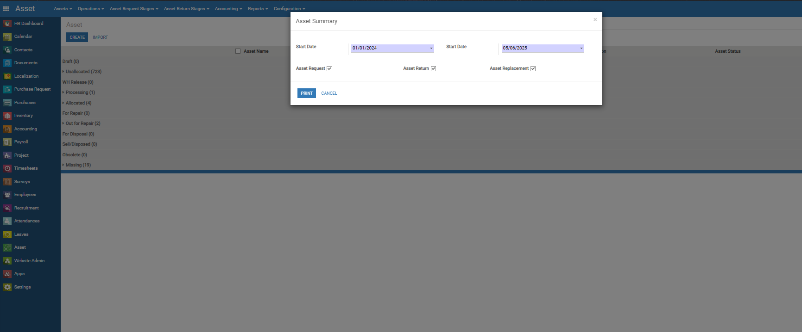
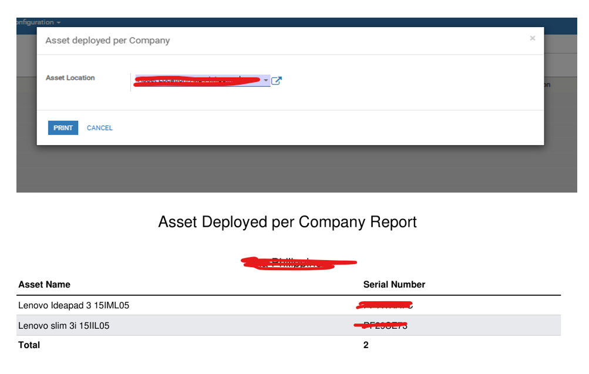

Asset Management System (v.10)
Records of all Assets, Asset Issuance and Return, depreciation of Assets, Asset accountability and maintenance of Assets.
Check the available on hand assets and manage Inventory and purchases.
View of all Assets (also the status). This is the list view.

View of all Assets (also the status). This is the Kanban view.
Operations Menu: Asset Request, Return, Maintenance, Replacement and Asset Purchase Request.

All Approvals of a user (depends on assign department/role), can be view here so that a user can easily notify or view all assets operations for approvals.


Accounting department can set the depreciation of each asset.

A user can generate a reports.

Configurations menu that officers can do all pre-requisites data.

This is the wizard before printing a report.
This is the sample output of reports (PDF).
Maintenance of Asset: The system will be able to manage to request the maintenance for the asset and track the records whether the asset is done for the maintenance or not and who's the priority.
Asset Issuance: The system will be able to request for the issuance of asset, approve the requests and print the request with the data needed
Asset Return: The system can handle the request to return the items/equipment and issue a print-out report.
Asset History: The system can handle the history of asset where the asset go first and the last person where the items/equipment issued.
Asset accountability: The total issued of assets in employee is handled or can be viewed.
Asset depreciation: Can handle the depreciation of assets.
Others: The system can see whether the assets are available
Data cleaner (v.10)
Description/Tasks:
Developed a custom module to automate data cleanup for old records.
Designed a script that identifies and deletes records older than 2 years from the current date.
Added configuration options to let users set the retention period (e.g., 1 year, 2 years, etc.).
Ensured safe deletion with logging
Improved database performance by reducing unnecessary historical data.
Construction Management (v.10)
Description/Tasks:
Test, Report and walkthrough of the given tasks and the proposed process
Modify, Customize and create modules.
Debugged and Fixed program error.
LL Asset Management (Odoo 18)
Description: A custom Odoo 18 Community module designed for managing company assets. It includes features for asset issuance, return, replacement, and configuration of categories and locations. This project is also published in the Odoo Apps Store.
- Supports both serialized and non-serialized assets.
- Asset history tracking with issuance and return logs.
- Configurable asset categories, types, and locations.
- Integration-ready with Accounting and Inventory modules.
- Tech/Tool: Odoo 18 CE, Python, XML, PostgreSQL